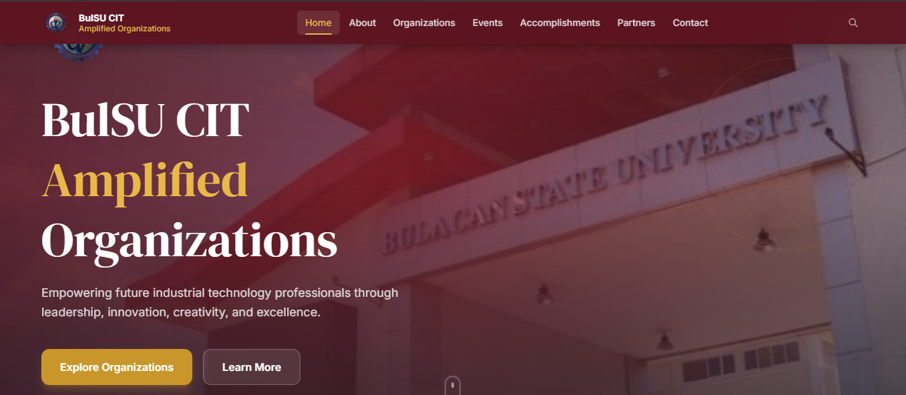

Project 01
BulSU CIT Amplified Organizations
Developed a centralized website for 11 BulSU CIT student organizations, showcasing their profiles, officers, activities, events, achievements, partnerships, photo galleries, and programs served. The website also provides information for students interested in joining the organizations.
View Prototype